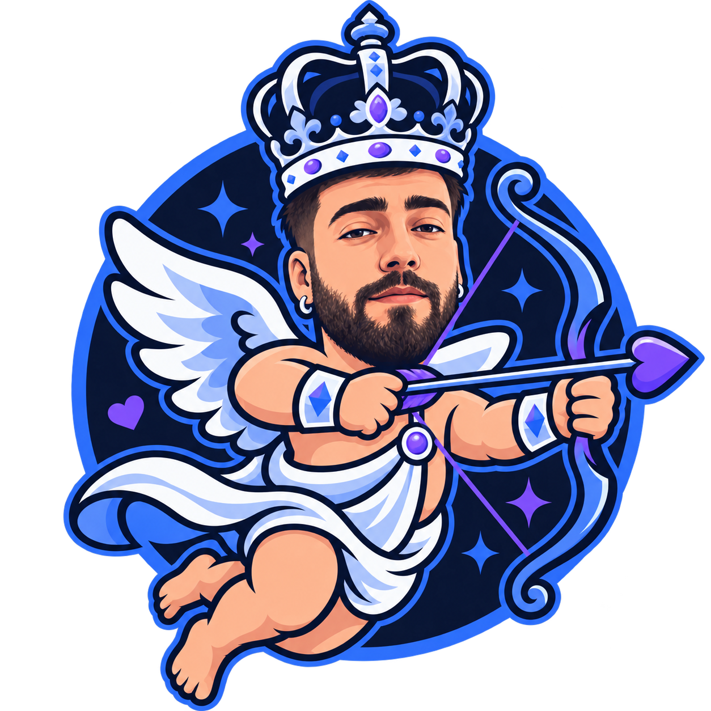

CherubLinkLa même soirée.
Même à distance.
Un film, un jeu, une conversation qui se prolonge. Retrouvez-vous dans votre espace, où que vous soyez.
- Regardez ensembleVotre écran et son audio, en direct.
- À votre rythmeLa webcam s'active quand vous le décidez.
Installe-toi.
Choisissez le même nom de salon pour vous retrouver.
Seul ton micro est actif à l'entrée.
Utilise un nom de salon long et difficile à deviner. Ton prénom et tes réglages sont mémorisés sur cet ordinateur.